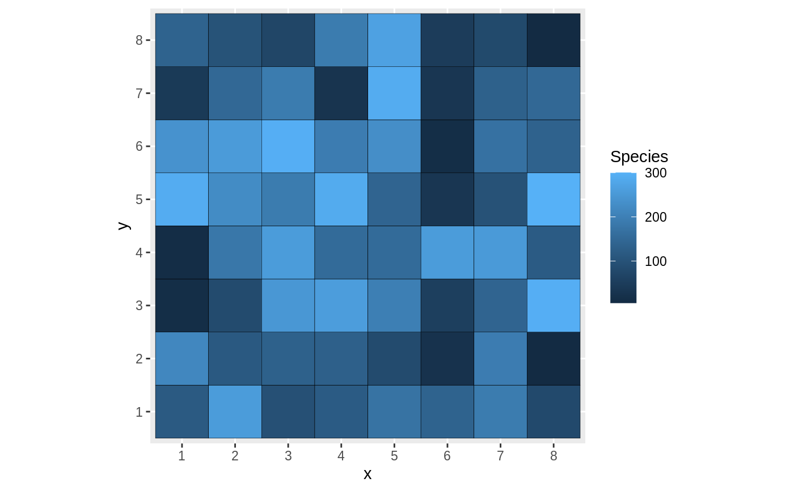

A community_model whose pattern is a wmppp object..
An R6Class.
initialize(pattern = NULL, timeline = 0, type = "Species")Initialization.
plot(time=NULL, sleep=animation::ani.options("interval"), ...)Default plot method: plots the pattern.
autoplot(time=NULL, ...)Makes a ggplot of the pattern.
run(animate = FALSE, sleep = animation::ani.options("interval"), save = FALSE, more_time = NULL)Run the model.
saved_pattern(time)Returns the pattern at the chosen time.
along_time(FUN, ...)Applies the function FUN to the saved patterns along time and returns a dataframe with columns x for time and y for the results of FUN. FUN must return a single value.
SimComm::community_model -> community_spcmodel
new()community_spcmodel$new( pattern = SpatDiv::rSpCommunity(n = 1, size = 100, CheckArguments = FALSE), timeline = 0, type = "Species" )
neighbors_n()community_spcmodel$neighbors_n(n)
neighbors_r()community_spcmodel$neighbors_r(r, keep_distances = FALSE)
neighbor_types_r()community_spcmodel$neighbor_types_r(r)
plot()community_spcmodel$plot(time = NULL, sleep = 0, which.marks = "PointType", ...)
clone()The objects of this class are cloneable with this method.
community_spcmodel$clone(deep = FALSE)
deepWhether to make a deep clone.
